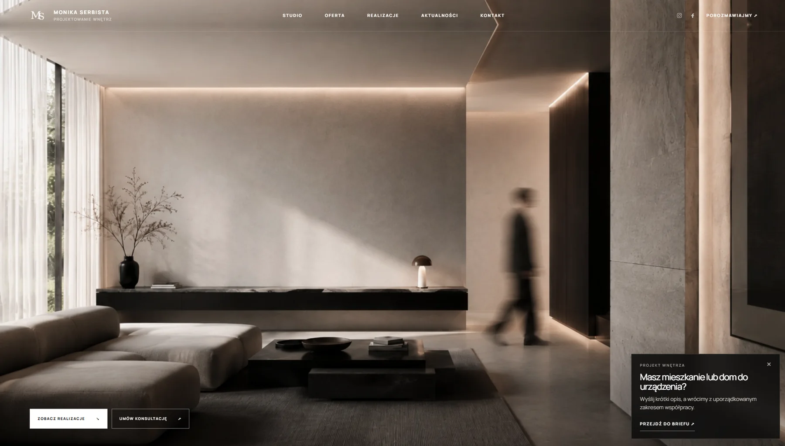
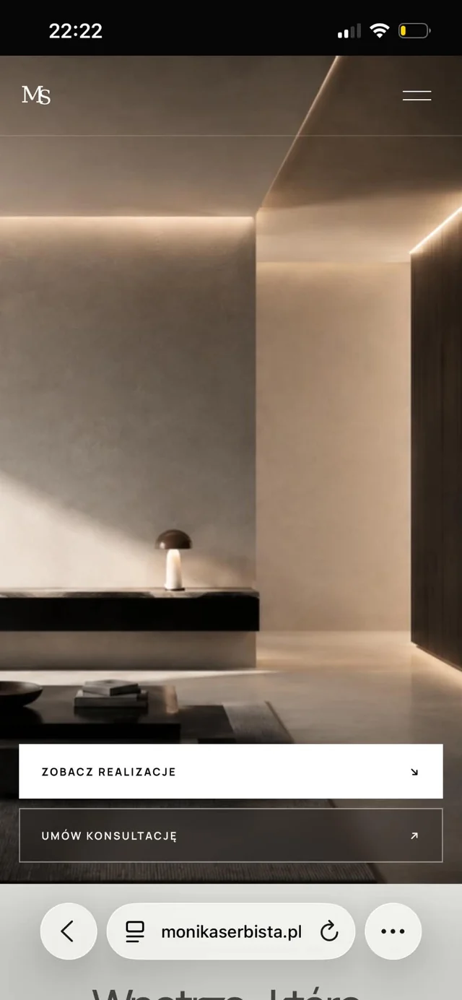

01
Wyzwanie
Projekty wnętrz sprzedają się obrazem, a dotychczasowa komunikacja opierała się głównie na Instagramie. Brakowało miejsca, które pokazuje pełne realizacje i porządkuje zapytania — zamiast rozmów rozsypanych po wiadomościach prywatnych.
Projektowanie wnętrz · Ciechanów
Studio wnętrzarskie, które potrzebowało strony w tonie własnych realizacji — spokojnej, ciemnej i opartej na fotografii.

01
Projekty wnętrz sprzedają się obrazem, a dotychczasowa komunikacja opierała się głównie na Instagramie. Brakowało miejsca, które pokazuje pełne realizacje i porządkuje zapytania — zamiast rozmów rozsypanych po wiadomościach prywatnych.
02
Zbudowałem stronę wokół fotografii: pełnoekranowy hero, ciemna paleta, dużo powietrza i typografia, która nie konkuruje ze zdjęciami. Portfolio podzielone na osobne realizacje, a zamiast zwykłego formularza — brief online, który prowadzi klienta przez konkretne pytania.
03
Klient dostał jedno miejsce, do którego kieruje z social mediów, i zapytania z gotowym zakresem: metraż, rodzaj wnętrza i oczekiwania — wszystko jeszcze przed pierwszą rozmową.
Wersja mobilna
Każdy projekt powstaje równolegle w dwóch układach. To nie jest wersja okrojona — to ta sama strona, przełożona na mniejszy ekran.

Napisz kilka zdań o firmie — odeślę wycenę i termin.